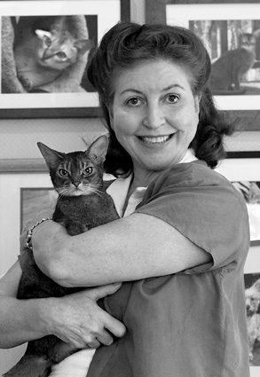

Bio
After thirty years as a video producer and director, Mary Carol Stunkel decided to focus on one picture at a time and began the serious study of her long-time hobby, photography.
Now equally at home in the dark room pursuing her specialty of black-and-white infrared and in the digital realm, Mary Carol is reveling in the challenge of communicating through images without sound. She is president of MC Squared Productions in Neptune, New Jersey. When not working behind the lens, Mary Carol is a published short story writer and adjunct professor at Monmouth University.
Furry Faces blends her visual arts expertise with her genuine love of animals to produce portraits that capture your pet's spirit.
Although I take photos of animals who aren't addressing the camera, it is the directed gaze that most holds my interest. I don't look for just cute pets, but furry faces whose eyes are soul windows through which we see the unprompted yearnings, joy, wisdom, and non-judgmental nature of our four-legged companions.
Each of the creatures who gaze at you in her images said something worth hearing to Mary Carol. She hopes they'll speak to you too.
